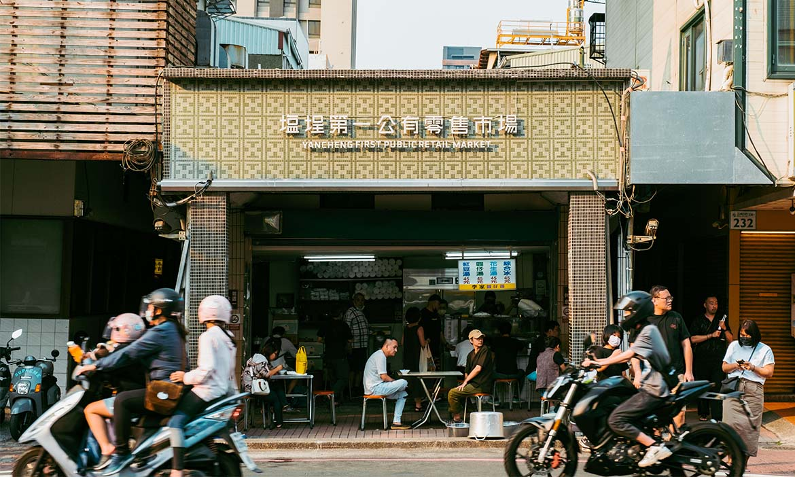
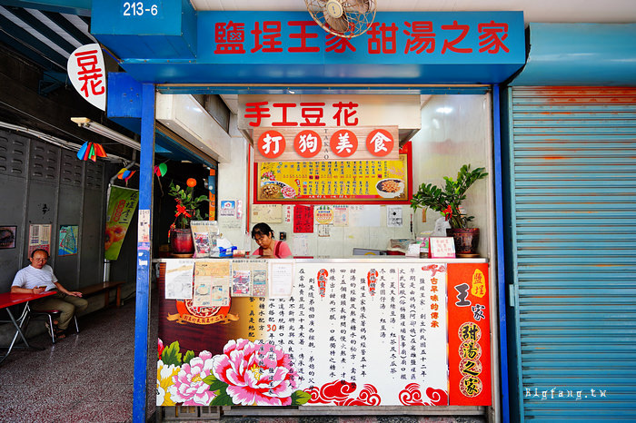
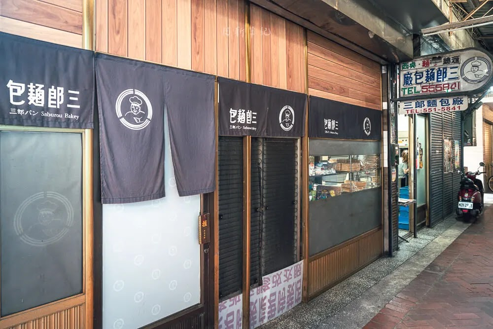
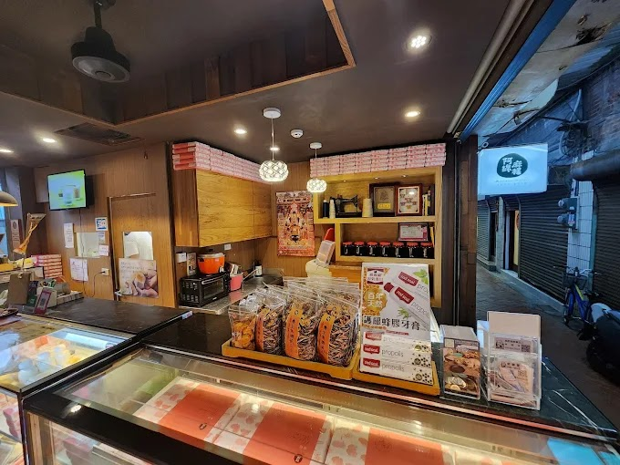
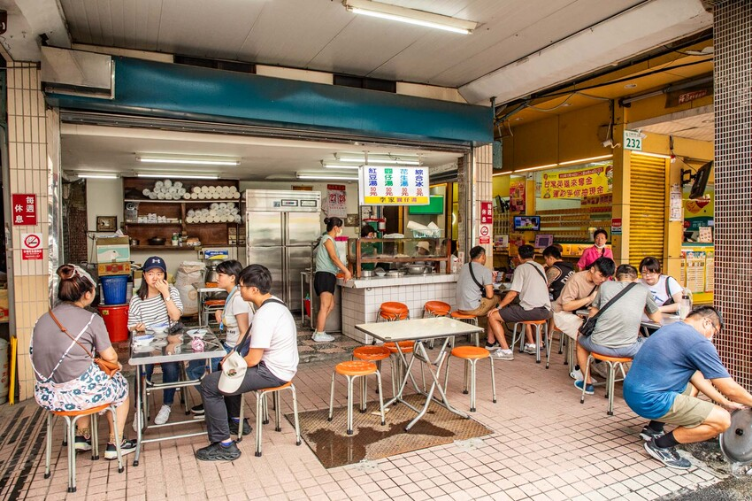
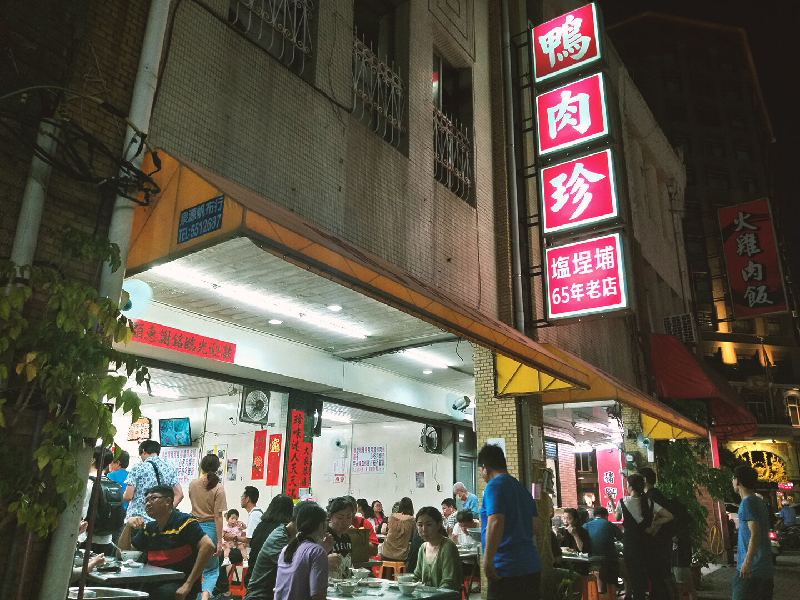
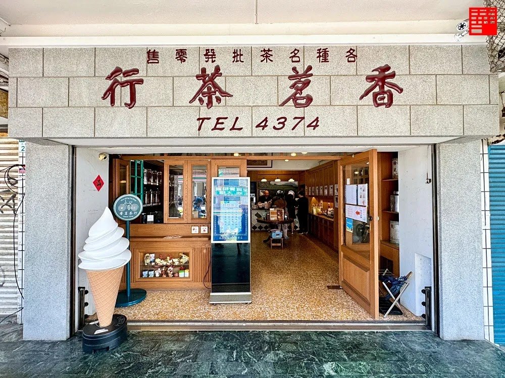

塩埕第一公有市場歷史悠久，於1949年時成立，所以在建築及技術方面皆可看見日治時期留下的痕跡。隨著時代變遷，建築老舊的問題逐漸浮出檯面，和許多傳統市場一樣面臨長年未整修及轉型的問題。在政府的幫助下，此地經過維修後成為新舊融合的熱鬧市場，一洗過去老舊的市場形象。
王家手工豆花是鹽埕市場裡的老字號，創立於1950年，至今已有70多年的歷史。這裡的豆花以其細膩的口感和獨特的甜味而聞名，吸引了無數食客前來品嚐。店內使用傳統手工製作方法，保留了豆花的原汁原味，是當地人和遊客都喜愛的美食之一。
三郎麵包廠創立於1968年，位於高雄鹽埕區，是當地人從小吃到大的老麵包店。早期由創辦人三郎師傅一手打造，以傳統港式麵包與台式甜點為主打，堅持手工製作、不使用防腐劑，每天清晨出爐的麵包香飄滿街，是許多學生與上班族的早餐回憶。
阿綿麻糬以手工現做的傳統麻糬為主打，內餡口味多樣，包括花生、紅豆、芝麻等，每顆麻糬都皮薄餡多、Q彈香甜。選用在地食材與古法製作，口感溫潤而不黏牙，是許多高雄人從小吃到大的回憶。阿綿麻糬不僅是甜點，也是一種代表著台灣人情味與手藝精神的傳統美食。
李家圓仔湯創立於1953年，是高雄鹽埕區歷史悠久的甜品老店。早期由李家阿嬤推著木頭攤車沿街叫賣，以手工現做的圓仔（湯圓）和傳統糖水為招牌，憑著真材實料與濃濃人情味，成為地方居民冬天驅寒、夏日消暑的必訪小吃。
鴨肉珍創立於1973年，發跡於高雄鹽埕的街頭攤位，以鴨肉飯打響名號。當時的創辦人珍姐憑著家傳滷汁和用心料理，吸引許多在地人上門，成為鹽埕地區家喻戶曉的庶民美食代表。隨著時間推移，鴨肉珍也見證了鹽埕從繁榮走向沉寂的過程，卻始終屹立不搖。
香茗茶行原由老一輩經營，位於鹽埕街角，販售各式茶葉，具有濃厚人情味與文化底蘊。然而，隨著消費習慣改變與數位化興起，傳統經營模式難以吸引年輕族群，缺乏包裝與行銷創新，逐漸面臨轉型壓力。年輕世代接手後，將香茗茶行轉型為結合手搖飲風格的現代茶飲空間，保留傳統茶葉價值，並加入創新飲品、冰淇淋與社群行銷。空間融合復古與現代風格，成功吸引年輕客群，並達成青銀共生與市代接力。
